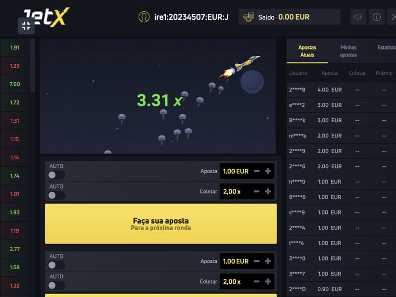

Jogue Jet X em um cassino online
Os jogos Crash ganham rapidamente popularidade nos casinos online. Em 2019, o fornecedor Smartsoft Gaming lançou o Jet X, que se tornou imediatamente um sucesso em muitos sítios web de jogo populares. O jogo refere-se ao desenvolvimento de um novo formato de jogo, onde oferece um princípio de entretenimento completamente novo baseado no fator humano. O truque principal é que os jogadores estão constantemente no escuro, esperando grandes ganhos. Há sempre a opção de se contentar com pequenos ganhos ou de tentar alcançar as maiores probabilidades. A palavra final, como acontece com a maioria dos jogos na Internet, é a Fortuna.
Razões para a popularidade do Jet X
Este tipo de jogo crash é um desenvolvimento inovador para sítios web de casinos online e é um jogador líder entre os casinos online. Tal popularidade dos jogos de crash é compreensível, dados os seus múltiplos méritos.
Vantagens de fazer cair o jogo JetX
O jogo é análogo a outros desenvolvimentos de crash, tais como Aviator. Os fãs da slot maquine de sucesso podem mudar a imagem, traçar gráficos, características e aplicar diferentes estratégias que aproximam o caminho para a vitória no Jet X.
No lado positivo, há um equilíbrio perfeito entre a adrenalina e a excitação. Os jogadores podem variar o seu passatempo, tentando contentar-se com um pagamento mínimo ou arriscando se tornarem o vencedor do Jackpot progressivo.
Como jogar e ganhar no JetX
O jogo Jet X trata do tema da aviação. Os jogadores vão para uma pista de aeroporto com a oportunidade de testemunhar a descolagem de um avião vencedor. Para poder jogar e ganhar no Jet X, é necessário conhecer primeiro as regras básicas. É também a aplicação de estratégias e táticas que trazem a vitória muito mais perto.
Regras do jogo Jet X
O jogo é multiplayer, por isso as rondas começam automaticamente. Antes do início, são feitas apostas, que os jogadores podem fazer entre 0,1 e 600. A tarefa é estar atento à altitude crescente do avião e conseguir retirar as probabilidades a um determinado momento. Quanto maior for o ponto de descolagem, maiores serão os ganhos. Mas se o avião voar para longe, o jogador perde todos os seus ganhos. O Jet X contém uma função de bónus sob a forma de O Jackpot. Qualquer pessoa que jogue com apostas de 1 crédito ou mais e desista com probabilidades de 1,5+ pode ganhar o jackpot.
Estratégias e táticas no Jet X
Os sítios web temáticos oferecem muitas estratégias vencedoras no Jet X, entre as quais as mais populares podem ser destacadas:
Uma vez que a proporção atinja mais de 1,1, pode ser feito um cashout. Ter sorte mais de 4 vezes seguidas dá-lhe a oportunidade de aumentar gradualmente o tempo de espera até à ronda infrutífera. As recompensas frequentes são então garantidas.
O jogador efetua autocashouts em multiplicadores na gama x2 a x3, aumentando o potencial do prémio. A percentagem de rondas vencedoras atinge em média 40%, o que é suficiente para ganhar de volta em caso de azar.
Isto é usado quando se quer ganhar um grande prémio de x100+. Para tal, as estatísticas de probabilidades elevadas devem ser estudadas em detalhe, analisando, em simultâneo, os resultados da jogabilidade. A ronda vencedora dar-lhe-á um verdadeiro jackpot, multiplicando a aposta por 100, 200 ou mais vezes.
As táticas vencedoras podem ser alteradas pelos jogadores, dependendo dos seus objetivos e do seu humor. Esteja sempre ciente do limite, e não o exceda se a Fortuna se recusar. As rondas podem ser lentas ou rápidas, sendo necessário aprender como se ajustar a elas, dependendo da situação. A percentagem de pagamento do jogo é de 97%, o que só se revela rentável com a abordagem correta.
O objetivo de jogar Jet X
O objetivo de jogar o Jet X pode variar, dependendo da preferência do jogador. É possível jogar por diversão na demonstração, onde as apostas são feitas com a moeda do jogo. Também é possível jogar por dinheiro e obter recompensas reais. O tamanho destes últimos depende do tamanho das apostas, da utilização de várias táticas e riscos. O principal é lutar pelo seu objetivo e não aplicar medidas extremas, tentando vingar-se. O jogo Crash Jack X permite-lhe tentar a sua sorte hoje nos locais dos melhores casinos.
Onde jogar JetX
Como podem ver, o Jet X merece realmente a vossa atenção. Ao escolher um casino online onde jogar o Jet X não deverá ter quaisquer problemas. O nosso sítio web apresenta os melhores casinos online, e não terá problemas em encontrar opções onde jogar o Jet X. E os bónus para novos jogadores serão uma boa adição ao seu prazer de jogo. Os melhores casinos para jogar Jet X no nosso sítio web.